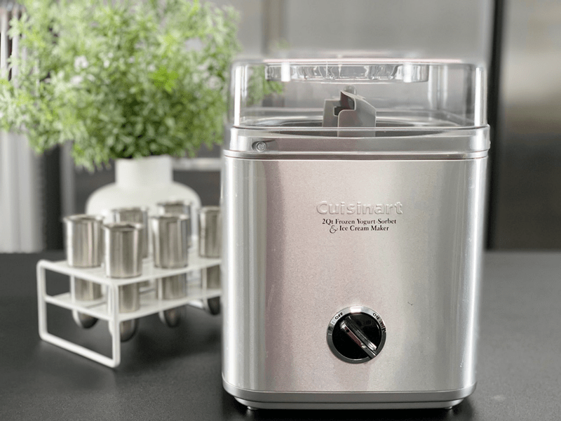
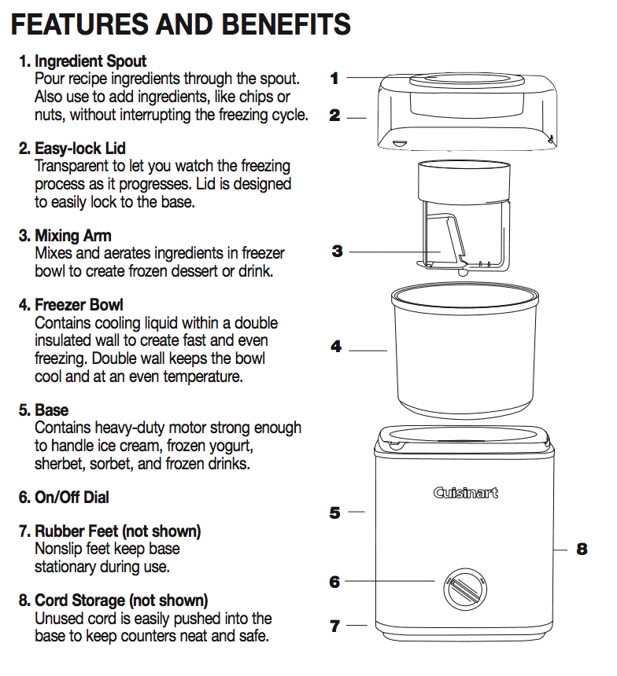

#1 – Ice Cream Machine – Why and What I Recommend
I don’t know a person that doesn’t enjoy ice cream. Oddly enough, I consumed more ice cream while living in Alaska than I ever did living in warmer climates. What’s up with that? During my heavy ice cream eating days, I never dreamed of making homemade ice cream. That all changed once I started learning about the raw, whole food lifestyle.

It was at this time that I decided to purchase an ice cream machine so I could add more delicious and nutritious recipes to my arsenal. It doesn’t get used daily like my blender and food processor, but it is a great addition to have in order to fulfill those ice cream cravings. I don’t have a lot of experience with a wide range of makes and models, but I stand by the Cuisinart Frozen Yogurt-Sorbet and Ice Cream Maker. I know what you might be asking…
Do I have to have an Ice Cream Machine?
The quick answer is no, but I recommend using one if at all possible. By going through the process of using an ice cream machine, it will create a better ice cream texture due to the air that it helps to whip into it. Ice cream machines range in price anywhere between $40 – $300 plus. Mine was roughly $70 when I bought it over seven years ago.
I recommend purchasing the 2 qt. Cuisinart ice cream machine. It will cost around $65.00 and is a great introductory unit. I take that back…it’s a great machine even if you have been doing this for a long time. I have yet to upgrade mine, and it still gets the job done! Here is a quick diagram of the unit I recommend.

Get the Family in the Kitchen
Kids (and adults) love ice cream, and I can’t think of a better way to spend some quality time together than in the kitchen. Get them involved through the whole process, from beginning to end. You will create beautiful memories, teach your loved ones about healthy ingredients, and better yet, they will learn just how delicious eating healthy can be.
Once you have mastered a unit such as the one I am recommending, and your interest in ice cream has reached an all-time high, you might want to then invest in a higher-end model. But if you are starting out or only wish to make ice cream every-know-and-then, start with a mid-quality machine.
Ready to learn some tips and tricks when making ice cream? If so, click (here).
Let’s Go Shopping
My Recommendation (price subject to change)
Nouveauraw.com is a participant in the Amazon Services LLC Associates Program, an affiliate advertising program designed to provide a means for us to earn fees by linking to
Amazon.com and affiliated sites – at no extra cost to you. Thank you for your support! amie sue
© AmieSue.com